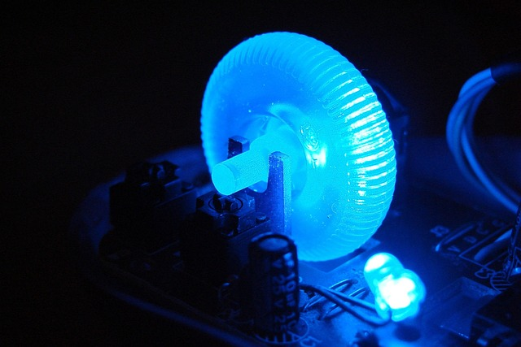
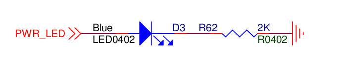

Habilitando o Led Azul

Introdução
A Khadas VIM3 possui um conjunto de 3 LEDs soldados na placa, os LEDs Branco, Vermelho, Azul. Na versão do kernel Linux Android amlogic-bmeson-5.4, o LED Azul não vem habilitado por padrão. Nesse post vou descrever os passos que utilizei para deixar esse LED acessível ao Android.
Informações Úteis
- Versão do AOSP:
android-12.0.0_r4 - Versão do Kernel Android:
android-amlogic-bmeson-5.4 - Distro de Compilação:
Linux Mint 21 - Versão do Kernel da distro:
5.15.0-56-generic
O GPIO do LED Azul
Os LEDs da placa estão na letra I da imagem abaixo (Fonte):

É preciso saber qual desses LEDs é o azul e a qual GPIO ele está conectado. Para isso, é necessário buscar no esquemático da placa, que pode ser encontrado nesse link. Procurando por BLUE, podemos encontrar a porta que ativa o LED.

Ele mostra que o sinal que ativa o LED azul é o PWR_LED. Buscando no esquemático pelo componente que envia esse sinal, temos:

O STM8S é um microcontrolador de 8 bits, ele é responsável por fazer o controle de outros componentes da placa. Ele é controlado via i2c pelo endereço 0x18 e possui alguns comando pré-determinados para que possamos controlar os componentes que estão associados a ele.
Para mais detalhes sobre o STM8S veja Habilitando a FAN)
Habilitando o LED
Para ter acesso ao STM8S eu adicionei o seguinte código ao kernel Linux Android amlogic-bmeson-5.4:
...
&i2c_AO {
khadas-mcu {
compatible = "khadas-mcu";
reg = <0x18>;
fan,trig_temp_level0 = <50>;
fan,trig_temp_level1 = <60>;
fan,trig_temp_level2 = <65>;
fan,trig_temp_level3 = <70>;
hwver = "VIM3.V11";
};
};
STM8S via adb shell. Agora resta saber como ativar o LED azul. Para isso, é necessário saber qual comando deve ser enviado para o STM8S. Checando a escassa documentação da placa, encontrei o seguinte pdf vim3_mcu_reg_en que possui as seguintes linhas:
| Address | Register name | Byte | R/W | Note |
|---|---|---|---|---|
| 0x28 | LED_MODE_ON | 1 | R/W | 0:LED Off after Power On 1:LED On after Power On 2:LED Breath after Power On 3:LED Heartbeat after Power On |
| 0x29 | LED_MODE_OFF | 1 | R/W | 0:LED Off after Power Off 1:LED On after Power Off 2:LED Breath after Power Off 3:LED Heartbeat after Power Off |
Com base nessas linhas, o LED azul pode ter um comportamento quando a placa está ligada e outro comportamento quando a placa está desligada.
Testando
Depois de buildar o Kernel e o AOSP e flashar as imagens, utilizei o adb shell para fazer os testes.
Primeiro chequei para ver se o endereço 0x18estava disponível no barramento 0 (é necessário ter permissão de super usuário):
jaoboard:/ # i2cdetect -y 0 # barramento 0 do i2c
0 1 2 3 4 5 6 7 8 9 a b c d e f
00: -- -- -- -- -- -- -- -- -- -- -- 0e --
10: -- -- -- -- -- -- -- -- 18 -- -- -- -- -- -- --
20: UU -- 22 -- -- -- -- -- -- -- -- -- -- -- -- --
30: -- -- -- -- -- -- -- -- -- -- -- -- -- -- -- --
40: -- -- -- -- -- -- -- -- -- -- -- -- -- -- -- --
50: -- 51 -- -- -- -- -- -- -- -- -- -- -- -- -- --
60: -- -- -- -- -- -- -- -- -- -- -- -- -- -- -- --
70: -- -- -- -- -- -- -- --
com o endereço 0x18 disponível, usei o seguinte comando para deixar o LED azul piscando enquanto a placa estiver ligada:
i2cset 0 0x18 0x28 3 w -y # Heartbeat

Para mudar o comportamento do LED azul para a placa desligada, basta mudar o registrador de 0x28 para 0x29. Por exemplo:
i2cset 0 0x18 0x29 3 w -y # Heartbeat
Conclusão
Agora os 3 LEDs disponíveis na Khadas VIM3 podem ser utilizados, no futuro a ideia é criar um Device Driver para controlar o LED azul. Os outros (Branco e Vermelho) já pertencem a categoria de UserLed e podem ser encontrados em /sys/class/leds/ com os nomes vim3:white:sys e vim3:red. Devido isso, podem ter seu comportamento alterado de acordo com o arquivo trigger, por exemplo:
jaoboard:/sys/class/leds/vim3:red $ cat trigger
[none] rc-feedback bluetooth-power rfkill-any rfkill-none mmc0 timer
oneshot disk-activity disk-read disk-write ide-disk heartbeat backlight
gpio cpu cpu0 cpu1 cpu2 cpu3 cpu4 cpu5 default-on transient panic mmc2 mmc1
hci0-power rfkill0 rfkill1 rfkill2